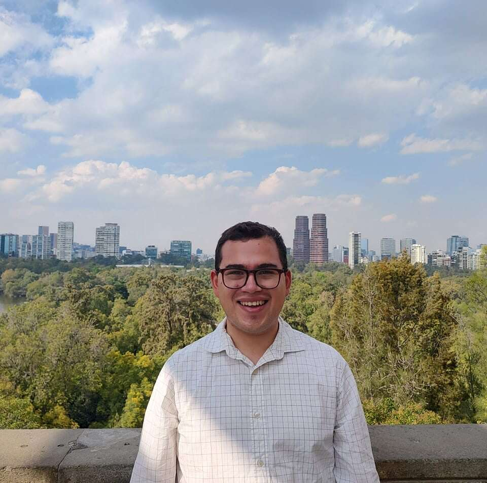

Josue Leyva
Welcome to my personal blog! I’m a passionate programmer with a love for coding, problem-solving, and continuous learning. From exploring new languages to diving into complex algorithms, I enjoy tackling challenges and sharing my knowledge with others. My goal is to inspire fellow developers and tech enthusiasts by discussing coding tips, tutorials, and insights into the ever-evolving world of technology. When I’m not immersed in code, I enjoy experimenting with new technologies, contributing to open-source projects, and learning more about the future of software development.